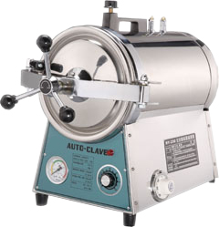

醫療級高溫高壓滅菌鍋
為了您的衛生及安全
靜妍美學堅持使用《醫療級高溫高壓滅菌鍋來消毒器具》在清除粉刺或者拔除毛髮時毛孔有可能會滲血，而我們的粉刺夾或者除毛夾也有可能會觸碰到血液或體液，如果「滅菌」不夠徹底，很可能造成血液或體液的交叉感染（例如愛滋病、B型肝炎、C型肝炎）。

唯有高溫高壓滅箘鍋才能夠「完全」去除所有細菌及微生物 避免交叉感染。
一般的紫外線消毒箱及酒精消毒只有消毒，而不是滅菌還是有可能產生交叉感染。